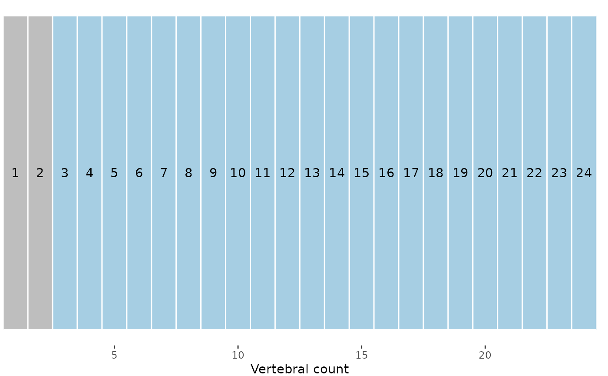

subsample() creates a smaller version of the original dataset by sampling its rows. Because PCOs should be computed on the full dataset and most other functions take in regions_pco objects, subsample() requires a regions_pco object as its input.
Arguments
- pco
a
regions_pcoobject; the output of a call tosvdPCO().- sample
numeric; either the number or proportion of vertebrae to remain the sampled dataset. IfNULL, the original dataset is returned.- type
string; the type of subsampling to do, either
"seq"for sampling in sequence or"random"for random sampling. Default is"seq". Abbreviations allowed.
Value
A regions_pco object, a subset of the original supplied to pco. The original dataset is stored as an attribute, which itself contains the subsampling indices.
See also
svdPCO(), process_measurements(), plotvertmap() to visualize the vertebral map after subsampling.
Examples
data("alligator")
alligator_data <- process_measurements(alligator,
pos = "Vertebra")
# Compute PCOs
alligator_PCO <- svdPCO(alligator_data)
# Plot vertebrae before subsampling
plotvertmap(alligator_PCO, dropNA = FALSE,
text = TRUE)

# Subsample data after estimating PCOs; subsample down
# to 15 vertebrae
alligator_PCO_sample <- subsample(alligator_PCO,
sample = 15)
# Plot vertebrae after subsampling; gray vertebrae
# have been dropped
plotvertmap(alligator_PCO_sample, dropNA = FALSE,
text = TRUE)